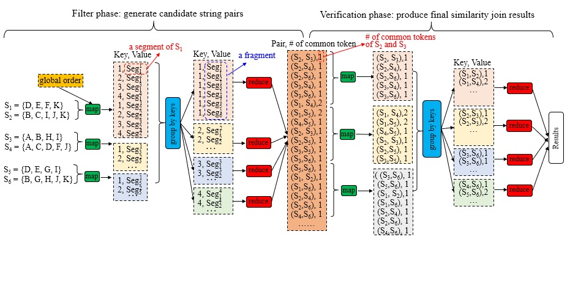
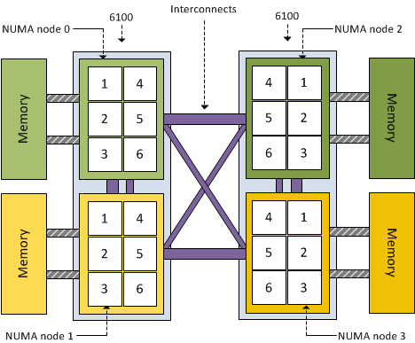
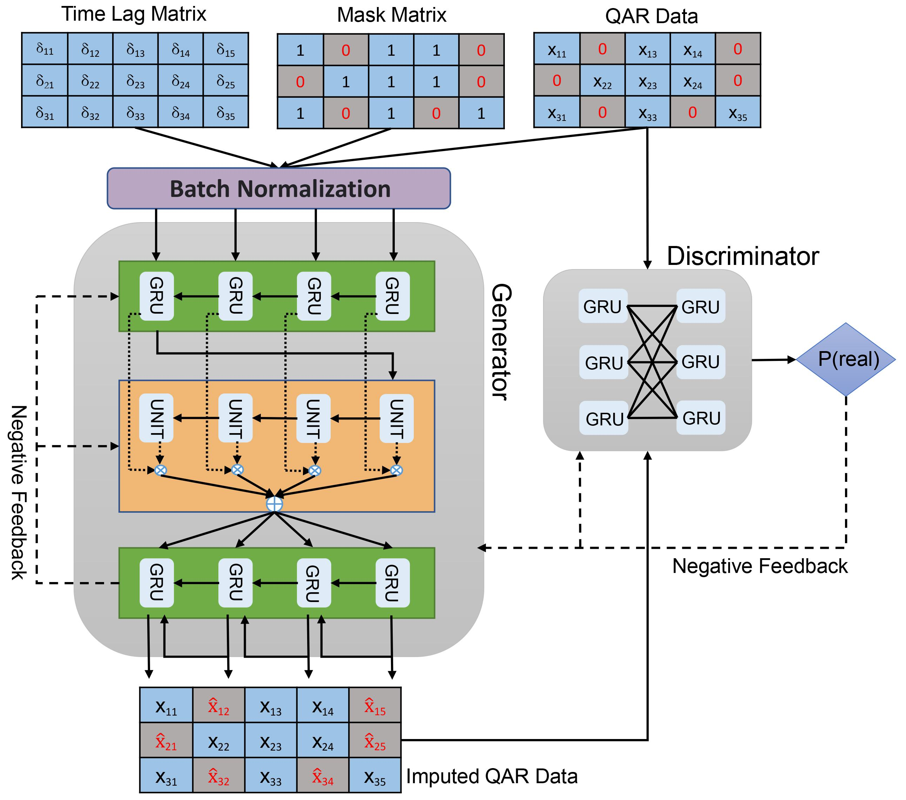
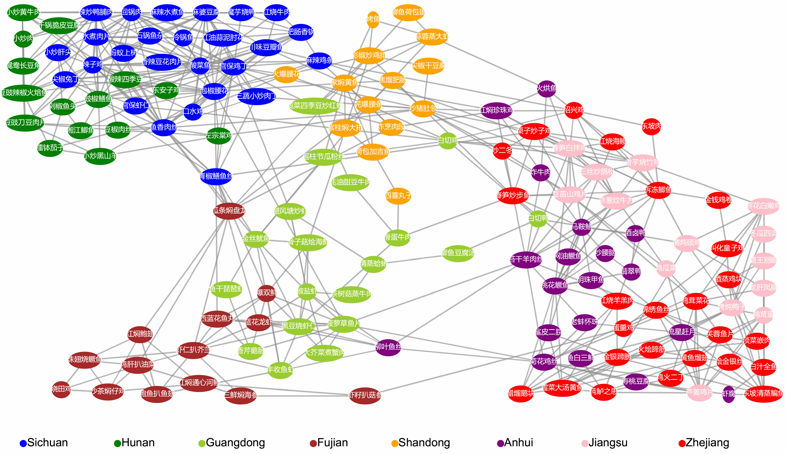
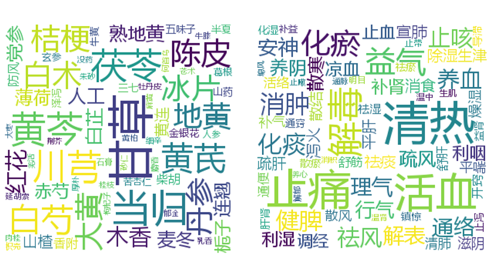

研究方向
大数据分析技术及行业应用
研究大规模数据的查询处理技术，包括分布式查询优化和新硬件环境下的查询优化等关键技术.在物联网、民航飞行品质监控领域开展行业应用.
数据库系统智能优化技术
基于机器学习、深度学习、大语言模型等先进的人工智能技术，研究数据库系统智能优化技术，包括系统参数优化、查询优化、索引优化等.
非结构化数据管理和分析
研究文本、图像等非结构化数据的管理和分析技术，包括数据抽取、清洗、知识图谱构建、深度学习技术的应用等。
研究成果展示

分布式查询处理
研究基于开源分布式架构的查询处理系统，支持大规模数据集的高效查询和分析。

基于新硬件的查询处理
研究面向多核处理器和非均匀内存访问(NUMA)架构的数据库查询优化技术
多维时序数据（QAR）缺失修复
模型以GAN为基本架构，利用GAN网络中的生成器和判别器的对抗性特点，来获取多维时间序列中真实值的数据特征以修复缺失值。为获取多维时间序列中不同维度数据之间的关联性，本文在生成器中分别引入注意力机制（Attention Mechanism）和自注意力机制（Self-Attention Mechanism）.
针对民航QAR数据进行通用性处理操作，使得提出的模型能够针对不同航班、不同类型、不同长度的多维QAR数据的缺失值进行修复操作.


食谱数据分析
在线食谱的成分多样性分析，包括成分消费多样性及成分组合多样性；
在线食谱的特色成分进行探索
对在线食谱的复杂性从成分数量、烹饪时间、烹饪工艺三个方面进行了评估；
根据食谱的成分、口味、烹饪工艺这些特征，构造了食谱的特征向量空间，探索它们所在菜系之间的关联性；
在线食谱的辅料成分进行频繁项的挖掘。
中医药数据分析
对《中国药典》(一部)以及经典中医药古籍的处方数据进行了爬取和清洗整理，利用数据挖掘工具探索数据的内在规律和潜在语义.
选取中医药的重要属性内容作为神经网络的训练数据集，用于探索新处方序列的生成，利用SeqGAN生成处方序列以及利用CGAN有条件地生成处方序列。
